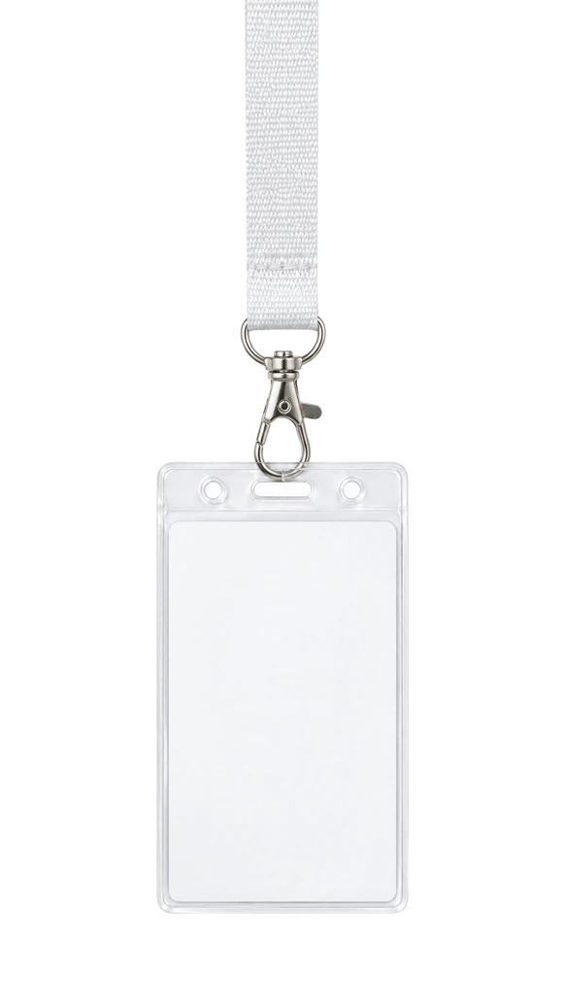
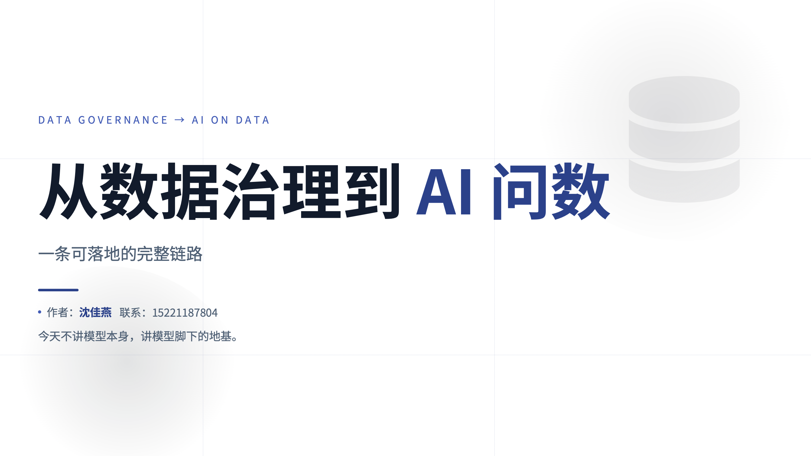

PORTFOLIO / 2026
点击进入作品
→

PROFILE
CARD
2026
DATA GOVERNANCE // AI AGENT
NAME
SHEN JIAYAN
FOCUS
DATA → AI AGENT
CERTS
CDGA / CISA / FRM
EXP
7 YEARS IN DATA
CLICK TO OPEN RESUME
PORTFOLIO · 作品集
从数据治理
到
AI 问数
7 年数据领域经验 ·
治理为底座，问数为应用
主导公司首个 AI 问数智能体从 0 到 1
进入作品 →
查看简历
向下滚动，镜头推进
作品集
SELECTED WORK

‹
01 / 32
›
← 返回首页
VELL LOOKBOOK
STUDIO VELL / E-COMMERCE
数据治理 · 方法论
2026 / 32 PAGES
— 从数据质量问题到字段级索引，一套可落地的完整链路。
‹
01 / 02
›